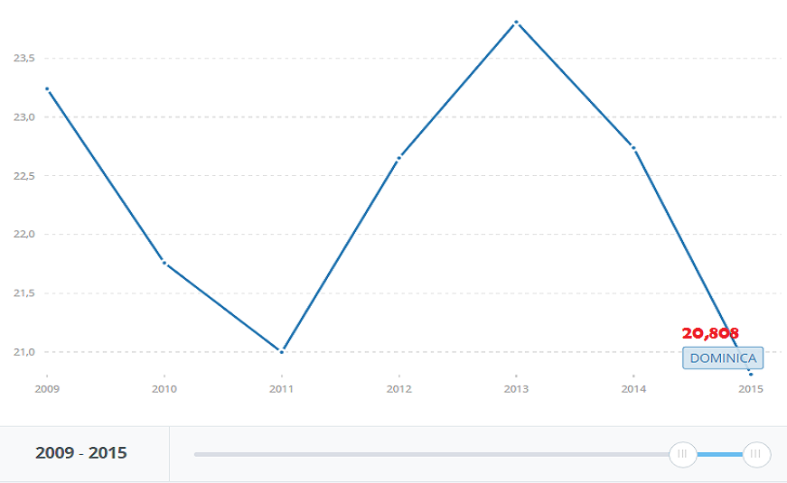
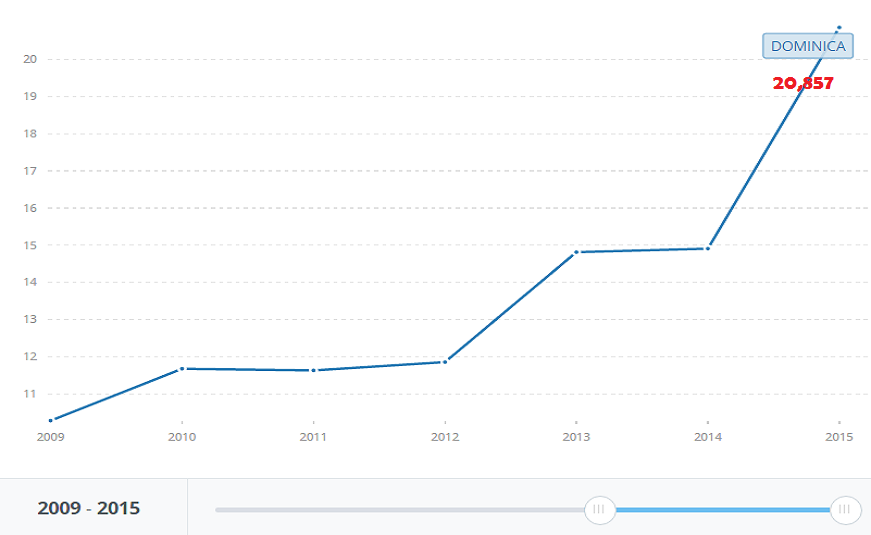
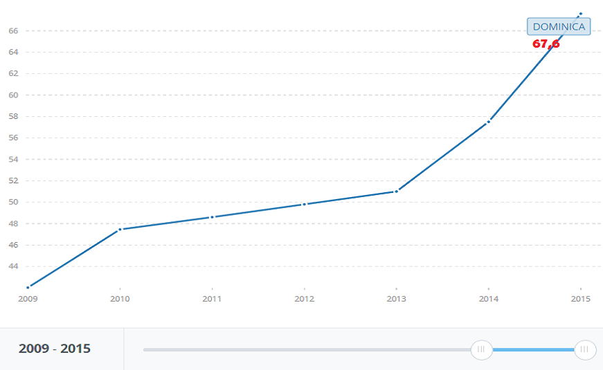
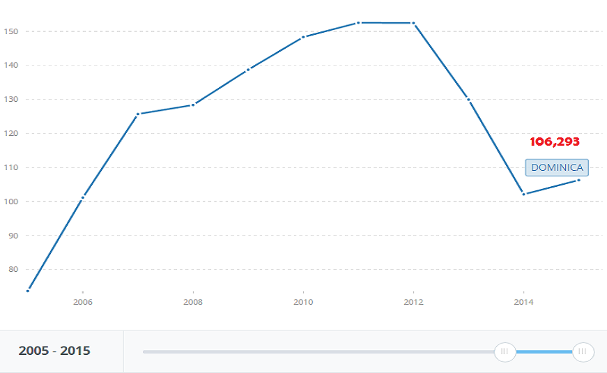

DOMINICA
Población Aproximada: 71,293 habitantes.
Superficie: 751 Km2.
46,269 usuarios de Internet.
15,123 Líneas telefónicas.
15,159 Abonados a internet por banda ancha fija.
LINEAS TELEFÓNICAS (por cada 100 personas) INTERNET POR BANDA ANCHA FIJA (por cada 100 personas)


USUARIOS A INTERNET (por cada 100 personas) ABONADOS A TELÉFONOS CELULARES (por cada 100 personas)


Fuente: Banco Mundial. (2015)
ENTIDAD REGULADORA
National Telecommunications Regulatory Commission.
Ministry of Information, Science, Telecommunications and Technology.
Tiene el mandato de contribuir al desarrollo económico sostenible, El sector de las telecomunicaciones y la reforma del sector público de Dominica.
Ir al Sitio Web

Establecida para coordinar un régimen regulatorio efectivo para mejorar el funcionamiento de las telecomunicaciones en interés del desarrollo sostenible de Dominica.
Ir al Sitio Web